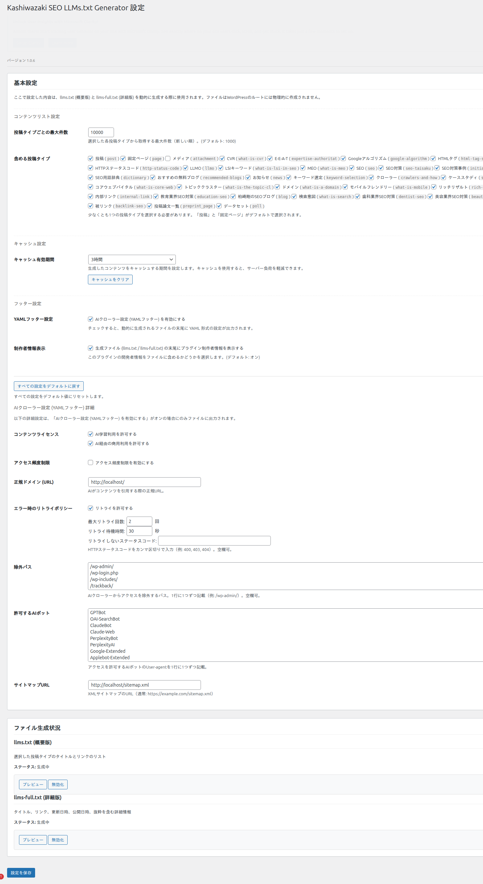

詳細設定
YAMLヘッダー、レート制限、許可ボットリスト、コンテンツ含有設定など、Kashiwazaki SEO LLMs.txt Generator の詳細な設定項目を解説します。
YAMLヘッダー設定
llms.txt のYAMLヘッダー（フロントマター）には、AIクローラー向けのメタデータを記述します。これらの設定により、AIクローラーがサイトの利用条件やアクセスポリシーを機械的に読み取れるようになります。

ライセンス設定
コンテンツのライセンス情報を設定します。AIクローラーに対して、コンテンツの利用条件を明示します。
| 設定項目 | 説明 |
|---|---|
| ライセンスタイプ | コンテンツに適用するライセンスの種類（例: CC-BY-4.0、All Rights Reserved など）を指定します。 |
| ライセンスURL | ライセンスの詳細が記載されたURLを指定します。 |
レート制限設定
AIクローラーのリクエスト頻度を制御するためのレート制限を設定します。サーバーへの過剰な負荷を防止しつつ、適切なクローリングを許可します。
| 設定項目 | 説明 |
|---|---|
| リクエスト上限 | 指定期間内に許可するリクエストの最大数を設定します。 |
| 期間（秒） | レート制限の適用期間を秒単位で設定します。 |
レート制限値を極端に低く設定すると、AIクローラーがコンテンツを正常に取得できなくなる場合があります。サーバーのスペックに応じた適切な値を設定してください。
リトライポリシー設定
AIクローラーがリクエストに失敗した場合のリトライ動作を指示します。
| 設定項目 | 説明 |
|---|---|
| 最大リトライ回数 | リクエスト失敗時の最大リトライ回数を指定します。 |
| リトライ間隔（秒） | リトライ間の待機時間を秒単位で指定します。 |
許可ボットリスト
llms.txt へのアクセスを許可するAIクローラー（ボット）を個別に指定できます。リストに含まれないボットはコンテンツへのアクセスが制限されます。
| 設定項目 | 説明 |
|---|---|
| 許可ボット名 | アクセスを許可するAIクローラーのUser-Agent名を指定します（例: GPTBot、Anthropic-AI、Google-Extended など）。 |
| ボットリスト管理 | ボットの追加・削除をAJAXで動的に行えます。 |
主要なAIクローラーのUser-Agent名: GPTBot（OpenAI）、anthropic-ai（Anthropic）、Google-Extended（Google）、CCBot（Common Crawl）、PerplexityBot（Perplexity）などがあります。
コンテンツ含有設定
llms.txt に含めるコンテンツを投稿タイプごとに細かく制御できます。
投稿タイプ別の設定
設定画面の「コンテンツ含有設定」セクションで、llms.txt に含める投稿タイプのチェックボックスをオンにします。
llms.txt（概要版）に含めるコンテンツと、llms-full.txt（詳細版）に含めるコンテンツをそれぞれ設定できます。
「設定を保存」ボタンをクリックして変更を反映します。AJAXによる非同期保存で、ページ遷移なしに設定が保存されます。
キャッシュ管理
生成されたllms.txtの内容はキャッシュされ、毎回の動的生成による負荷を軽減します。コンテンツを更新した際は、キャッシュをクリアして最新の状態を反映できます。
| 項目 | 詳細 |
|---|---|
| キャッシュクリア | 設定画面の「キャッシュクリア」ボタンでllms.txtのキャッシュを即座に削除できます。 |
| 自動更新 | 投稿の公開・更新時にキャッシュが自動的にクリアされます。 |
設定変更はすべてAJAXで処理されるため、ページを離れることなく即座に反映されます。3つのAJAXハンドラーが設定保存、キャッシュクリア、ボットリスト管理を担当します。